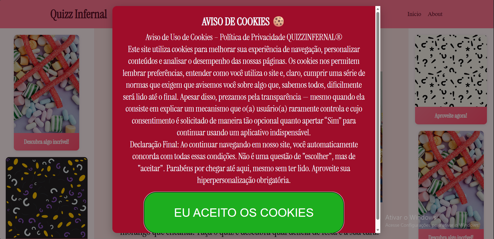
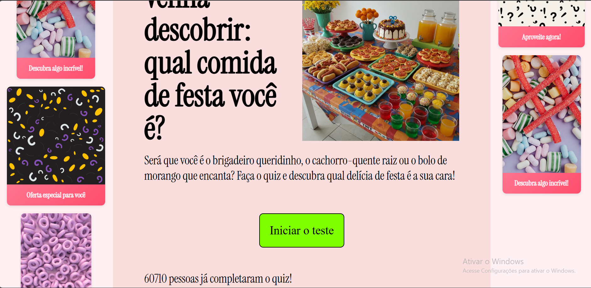
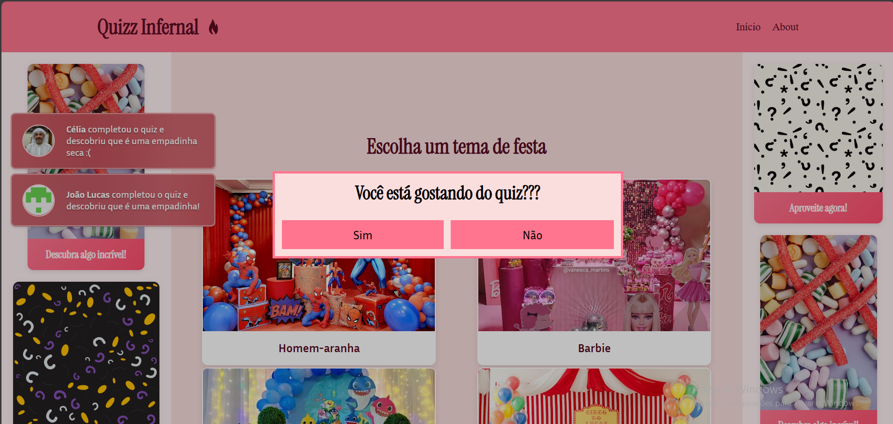
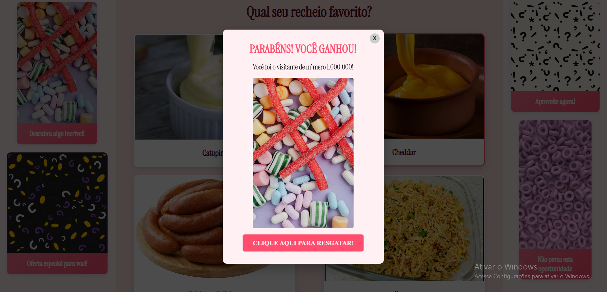
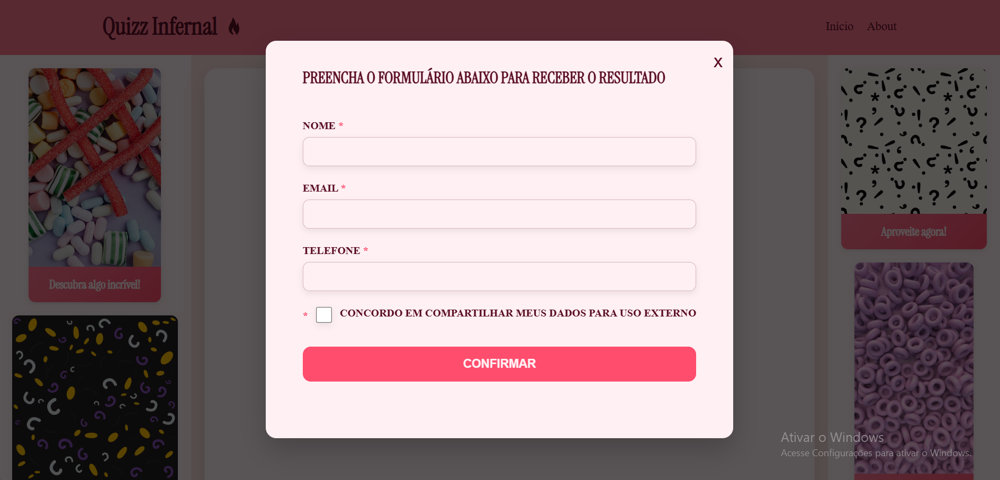
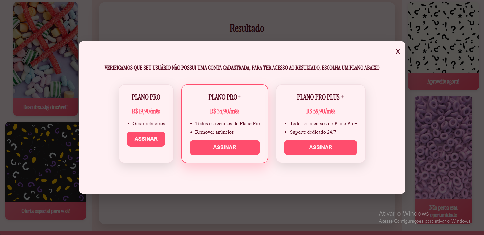

Sobre Nós
O site foi concebido como um quiz interativo com obstáculos, estruturado para evidenciar práticas comuns, porém prejudiciais, presentes na navegação cotidiana na web.
Nosso projeto nasce da vontade de provocar reflexão sobre como a web molda comportamentos, manipula escolhas e cria padrões digitais que aceitamos sem perceber. Para isso, desenvolvemos um quiz interativo com obstáculos, no qual cada etapa apresenta uma nova barreira inspirada em práticas reais (e bem irritantes) usadas em sites e plataformas.
- Ao longo do quiz, o usuário encontra:
- Anúncios persistentes que ocupam a tela e competem pela atenção,
- Botões enganosos que parecem opções válidas, mas só desviam o caminho,
- Pop-ups inconvenientes que surgem no pior momento possível,
- Solicitações exageradas de dados que não fazem sentido para um simples quiz,
- E diversos outros obstáculos projetados para confundir, frustrar e manipular — simulando fielmente as armadilhas da navegação moderna.
A brincadeira está no contraste: começamos com uma proposta leve e divertida, mas, a cada etapa, tornamos a experiência mais complicada, exatamente para mostrar como esses padrões afetam a navegação e influenciam o comportamento do usuário.
Nosso objetivo é unir crítica social, design experimental e aprendizado prático de HTML, CSS e Javascript, criando uma experiência que faça rir… e pensar.
Afinal, se a internet insiste em nos manipular, nada mais justo do que criar um espaço onde possamos enxergar esses truques — e rir deles juntos.
Explicação das telas:
Tela inicial
A primeira tela apresentada é a de cookies, que ironiza a falsa sensação de escolha frequentemente oferecida pelos sites. Nela, o usuário percebe que, na prática, as opções são limitadas: aceitar os cookies ou abrir mão do uso do serviço. Essa tela evidencia como decisões aparentemente voluntárias podem, na realidade, ser conduzidas por estruturas de design que restringem a autonomia do usuário.
A tela de início do quiz utiliza diversos anúncios e um contador de usuários como forma de superestimular e direcionar a atenção do visitante, simulando estratégias comuns de sites que buscam influenciar decisões por meio de excesso de informação e estímulos visuais.
Pergunta 1
Nesta tela, são apresentadas diversas notificações que competem pela atenção do usuário, incluindo alertas sobre outras pessoas que teriam acabado de realizar o quiz. Além disso, o usuário é obrigado a avaliar o site com cinco estrelas — já que qualquer outra opção é ignorada — e também precisa responder se está gostando da experiência, mesmo antes de poder acessar a pergunta principal. Esses elementos simulam práticas comuns na web que buscam pressionar, distrair e induzir respostas positivas, utilizando excesso de estímulos visuais, validação social artificial e avaliações forçadas. Dessa forma, a tela evidencia como determinados padrões de design podem manipular a interação do usuário e dificultar o avanço de forma intencional.
Pergunta 2
Na segunda pergunta, o usuário é imediatamente recebido com uma notificação afirmando que ele pode ser o “usuário número 1.000.000”, supostamente premiado, e que o prêmio pode ser resgatado por meio de um link destacado. Esse recurso parodia notificações enganosas muito comuns na internet, que exploram gatilhos de urgência e recompensa para induzir cliques impulsivos. Em seguida, ao avançar para as perguntas, o usuário se depara com alternativas que aparentam ser botões de resposta, mas que, na verdade, são anúncios disfarçados. Assim, cada tentativa de interação redireciona para conteúdos irrelevantes ou indesejados, simulando armadilhas de design que confundem o usuário e dificultam a navegação. Essa tela evidencia como interfaces podem manipular expectativas, misturar conteúdo informativo com publicidade e explorar a desatenção do usuário, tornando a experiência intencionalmente confusa e enganosa — uma crítica direta às práticas abusivas de design presentes em muitos sites e aplicativos reais.
Formulário de resultado
Na tela de resultados, o usuário acredita finalmente ter concluído o quiz e estar prestes a descobrir sua resposta. No entanto, ao clicar no botão para visualizar o resultado, ele é surpreendido por uma nova exigência: a obrigatoriedade de realizar um cadastro. Essa etapa ironiza práticas comuns na web em que, mesmo após o usuário cumprir todas as ações solicitadas, o acesso ao conteúdo prometido é condicionado ao fornecimento de dados pessoais. O formulário imposto funciona como uma crítica ao modo como muitos sites utilizam cadastros compulsórios para coletar informações, independentemente da relevância ou necessidade. Assim, a tela reforça a ideia de como o design pode ser utilizado para barrar o usuário no momento final, criando uma sensação de frustração e dependência, enquanto evidencia estratégias de retenção e coleta de dados frequentemente encontradas em ambientes digitais.
Assinatura
Após completar o quiz e preencher o formulário obrigatório, o usuário finalmente espera acessar seu resultado. No entanto, é novamente surpreendido por mais uma barreira: a exigência de escolher entre diferentes planos de assinatura Pro, Pro+ ou Pro Plus+, todos pagos e apresentados como única forma de continuar. Essa tela reforça a crítica às práticas abusivas de monetização presentes em diversos serviços online, que utilizam paywalls e ofertas “irrecusáveis” para restringir o acesso a conteúdos simples. A ausência de uma opção gratuita expõe como alguns sites criam falsas alternativas, oferecendo múltiplas escolhas que, na realidade, representam a mesma obrigação: pagar para prosseguir. Dessa forma, a etapa evidencia o uso de modelos de assinatura como mecanismo de pressão, colocando o usuário em um ciclo contínuo de obstáculos mesmo após já ter investido tempo e informações no processo. A tela satiriza o fenômeno dos serviços digitais que prometem experiências rápidas e acessíveis, mas que, ao final, transformam até atividades triviais, como um quiz, em oportunidades de cobrança.
Nossa Equipe
André
Cargo X
Felipe
Cargo Y

Gabriel
Cargo Z
Nicole
Cargo W
Régulo
Cargo V